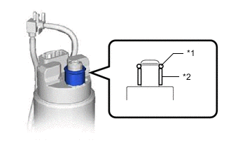
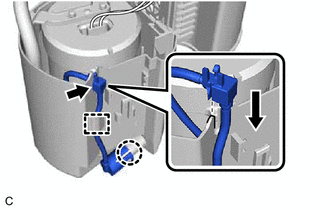

FUEL PUMP(w/o Canister Pump Module) REASSEMBLY

PROCEDURE
-
INSTALL FUEL PUMP WITH FILTER ASSEMBLY
Tech Tips
Perform "Inspection After Repair" after replacing the fuel pump with filter assembly.
-

*1 O-ring *2 Fuel Pump Spacer Apply gasoline to a new O-ring. Then install the O-ring and fuel pump spacer to the fuel pump with filter assembly.
-
Connect the fuel pump harness connector to install the fuel pump harness to the fuel pump with filter assembly.
-
Engage the 5 claws to install the fuel pump with filter assembly to the fuel filter.
Note
-
Make sure that the O-ring is not cut or pinched during the installation.
-
Engage the claws securely.
-
Do not remove the suction filter.
-
-
Engage the 2 claws to install the No. 1 fuel suction support to the fuel filter.
-
Engage the 2 claws and install the fuel filter and fuel pump with filter assembly to the No. 1 fuel sub-tank.
Note
Do not apply excessive force to the tube or No. 1 fuel suction support.
-

Engage the clamp and claw, and connect the fuel pump filter hose while aligning it with the installation position of the No. 1 fuel sub-tank.
-
Connect the fuel pump harness connector.
-
-
INSTALL FUEL SENDER GAUGE ASSEMBLY